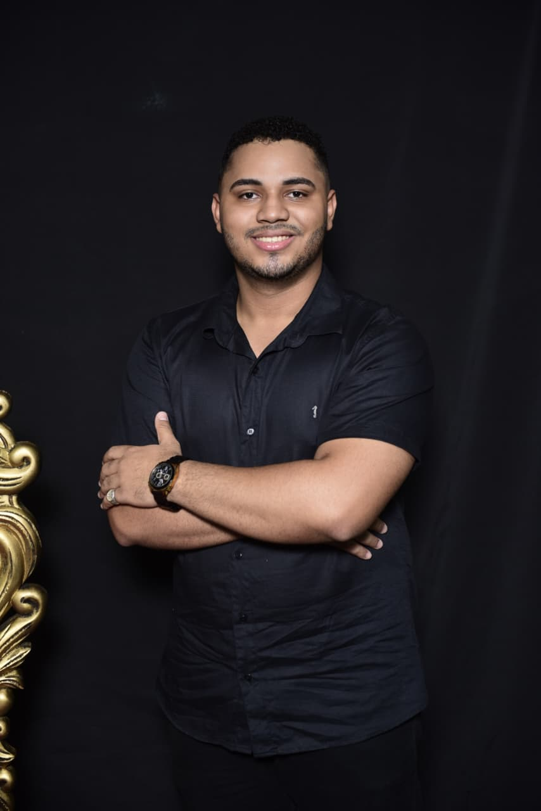
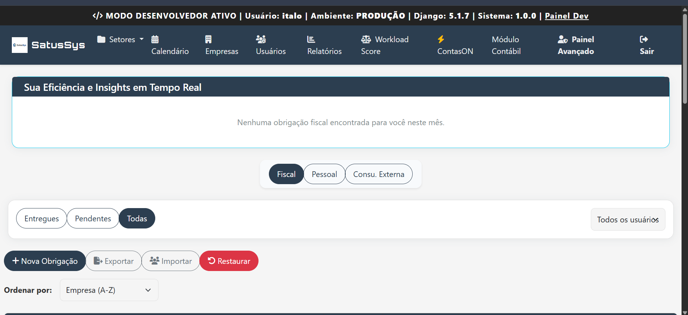
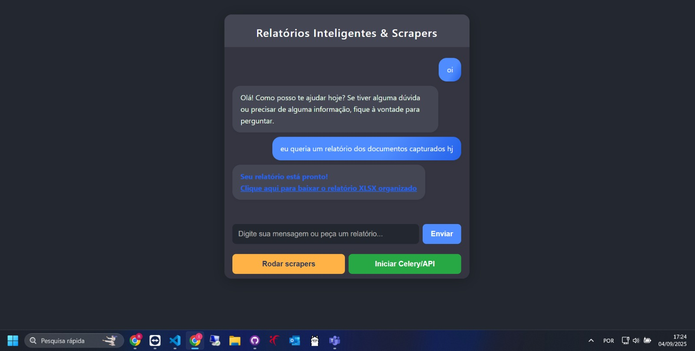
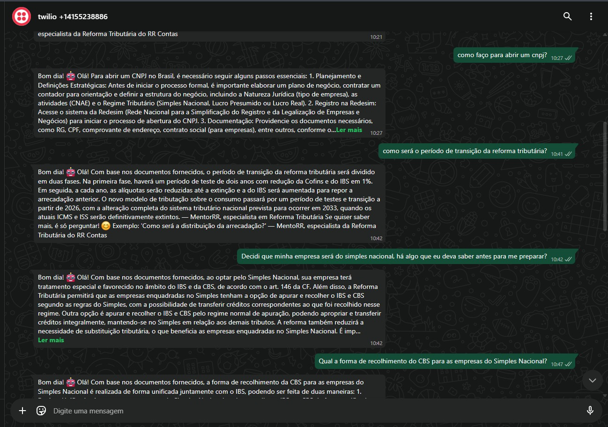
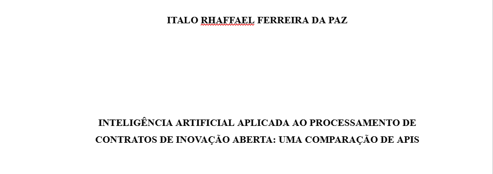
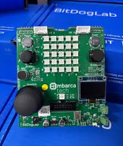

Sistemas web
Aplicações completas, do modelo de dados à interface, para operar processos reais do dia a dia de uma empresa.
Foco em backend: Python, Django, APIs, banco de dados e integração de sistemas. Transformo processos manuais em software — de aplicações web completas a automações e soluções com inteligência artificial.

Quatro frentes que costumam aparecer juntas no mesmo projeto: um sistema que organiza o processo, uma API que o sustenta, uma automação que elimina o trabalho manual e uma camada de IA quando ela realmente resolve algo.
Aplicações completas, do modelo de dados à interface, para operar processos reais do dia a dia de uma empresa.
Regras de negócio, autenticação, permissões, integrações e processamento de dados com Python e Django.
Rotinas repetitivas viram scripts: coleta de dados, geração de relatórios e comunicação entre sistemas que não conversavam.
RAG, busca semântica, chatbots e agentes aplicados a documentos e atendimento — IA como parte do sistema, não como enfeite.
Uma seleção do que melhor representa como eu trabalho. Há outros projetos entregues e em desenvolvimento, mas estes mostram o essencial: problema, solução e stack.

Sistema completo de gestão de obrigações fiscais para escritórios contábeis.
Sistema de classificação de NCM adaptado ao novo modelo trazido pela Lei Complementar 214. O vídeo ao lado mostra o fluxo de uso do sistema na prática.

IA com RAG e scraper acoplado à memória: coleta informações contábeis e fiscais, gera relatórios automáticos e responde por chat. Usa banco de dados vetorial (ChromaDB) para busca semântica.
Ver vídeo
Chatbot com RAG para consultoria tributária via WhatsApp, especializado em reforma tributária e atendimento inicial automatizado.

Comparação entre APIs de IA (ChatGPT, LLaMA e Mistral) na classificação de extratos de contratos de inovação aberta, avaliando acurácia, precisão e eficiência de cada modelo.
Ler o TCC
Sistema embarcado na placa BitDogLab que implementa a técnica Pomodoro, usando LED RGB e sinal sonoro para marcar os ciclos de foco e descanso.
Ver vídeoDesenvolvimento de sistemas web, automações e soluções com IA aplicadas a rotinas contábeis e fiscais — incluindo o SatusSys, a Orumilá e o MentoRR.
Atuação como desenvolvedor Frontend no IPDELVE, sistema voltado a oferecer um serviço online de baixo custo para consulta de dados de licenciamentos de patentes realizados por Instituições de Ciência e Tecnologia no Brasil e no mundo.
Atuação técnica na preparação, configuração, testes e suporte de urnas eletrônicas durante o processo eleitoral, seguindo procedimentos operacionais e de segurança definidos pela Justiça Eleitoral. Primeira experiência profissional diretamente relacionada à área de tecnologia, proporcionando contato com equipamentos, sistemas e processos técnicos em um ambiente de alta responsabilidade operacional.
TCC comparando APIs de inteligência artificial (ChatGPT, LLaMA e Mistral) na classificação de extratos de contratos de inovação aberta, com foco em acurácia, precisão e eficiência. No caminho, projetos de sistemas embarcados com a placa BitDogLab (EmbarcaTech).
Tecnologias que uso para construir e manter os projetos acima.
Sou Italo Rhaffael, desenvolvedor full stack com o pé firme no backend. O que me atrai em programação não é a tecnologia em si — é o momento em que um processo confuso, cheio de planilhas e retrabalho, vira um sistema que simplesmente funciona.
Trabalho principalmente com Python e Django, construindo APIs, modelando dados e cuidando das regras de negócio que sustentam a aplicação. Gosto de código que outra pessoa consiga ler daqui a seis meses e de sistemas que continuem de pé quando o volume cresce.
A parte de automação e IA veio naturalmente: depois de ver a mesma tarefa manual se repetir pela enésima vez, a pergunta deixa de ser “como faço isso mais rápido?” e passa a ser “por que ainda estou fazendo isso?”. Hoje aplico RAG, busca semântica e agentes onde eles realmente encurtam o caminho — e deixo de fora quando não encurtam.
Tem um projeto, uma ideia ou uma oportunidade? Me manda uma mensagem — respondo rápido.